Modpack Author: BoolymanMC
Origin: Modpack Link
Versions: MC = 1.10.2 - Pack = 1.30
Presentation
I usually don’t play modpacks that are under at most 1.12, but this one was an exception because it seemed like it wanted to change how progression felt.
From what I read, it’s going to be a difficult one, with a lot of focus on surviving against mobs. Let us enter the world of Sthenea to test our mettle!
Overview
Wiped-Clean Slate
Right as it begins, I get a class option quest, so I chose to be a ranger because I love the spider pet. It’s hard to keep up with all the things while mobs are out for your blood, I can barely grab some wood and get a house kit before the first night comes. Made the mistake of thinking mining during the night was safe, and going up had me greeted by several creepers destroying my shabby home.
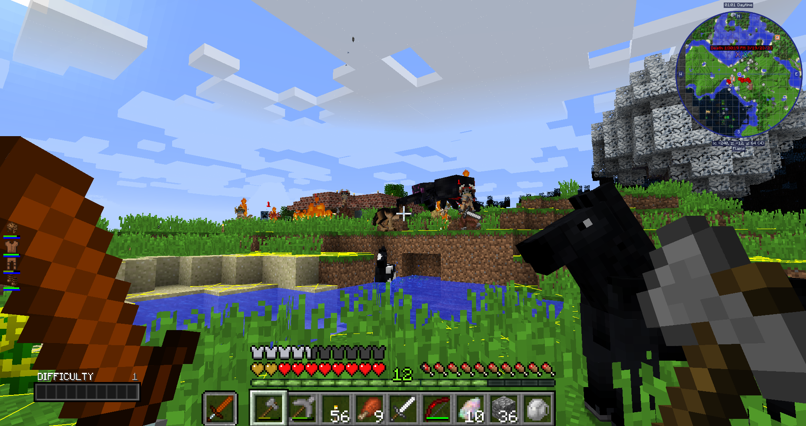
I had to resort to making a platform over lava to exploit mob AI and survive nights. Meanwhile I plant some things and my ores from simple mining help progressing to the next step - traps. I use plates and go through my first blood moon unscathed thanks to those, and some progression yields me turrets, which are really good!
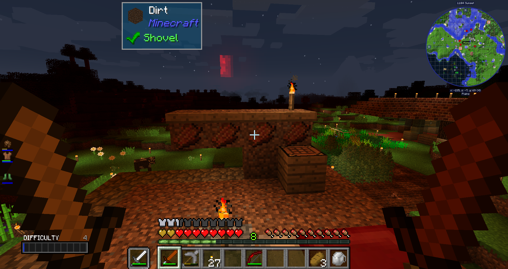
Problem is, I use a flattener tool that nukes my current base… Back to ground zero. A somewhat desperate situation, but using the turret with cobblestone, I am protected well enough while the large plot of flat land is fully lit, reducing by a lot the mobs appearing. That gives me enough time and availability to make a smeltery which significantly increases ore yield. It allows me to upgrade my tools and I expand my base to prevent intrusions - full reinforced stone walling off.
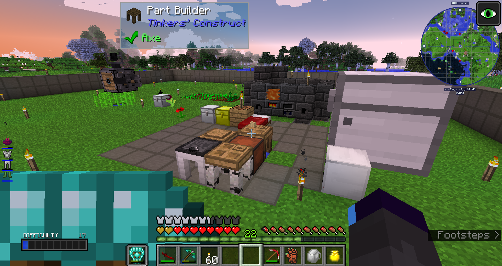
Also adding a colossal chest to solve storage for a while, I can focus on basic progression quests and blood magic slightly. I encounter a bottleneck in rare resources meaning I have to start mining but also branching off in new techs. A lucky expedition yields just enough lapis to make an armor workbench allowing me to make speed 2 boots, a good boost!
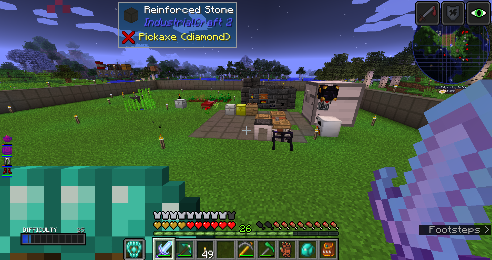
Sanguinomancy
While waiting for some bricks to cook, I decide to go explore the outside and grab whatever I find. Starting with an essence pool that will allow me to begin Ars spells! I also spend several lives trying to explore an underground dungeon, ugh those suck, and I really need better lighting to prevent mobs from spawning constantly.
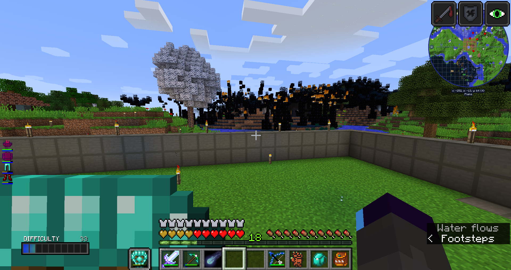
After sorting what I found, I can finish building the advanced blast furnace - steel is now available! I get the idea of making a tinker bow as well, this should cost me a lot less now with good ranged support - full mythril. Some quest rewards are pretty juicy, and I nab lapis seeds to stop being in constant need, and I also get an amazing spell from a bag! It costs me a high amount of mana for now, but it already seems very strong.
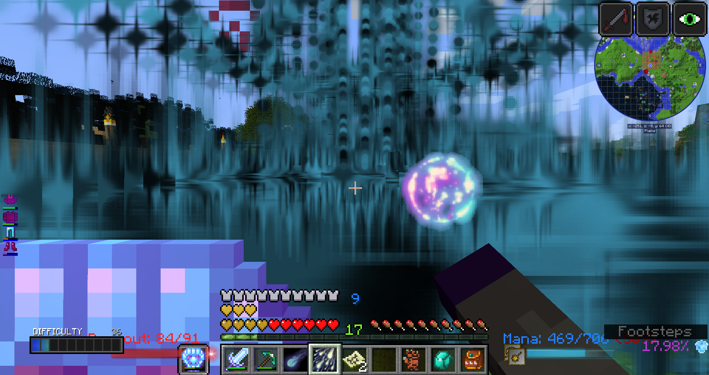
I got a treasure map earlier and the loot had some pieces of quartz, which was exactly what I needed to auto harvest my mystical plants. With that running, I also got just enough glowstone to reach a new altar tier, and I quickly go to tier 4 after getting some blood shards. I’ve got most of the quest line done, only remaining things are the special meteor rituals that would provide a high amount of precious resources.
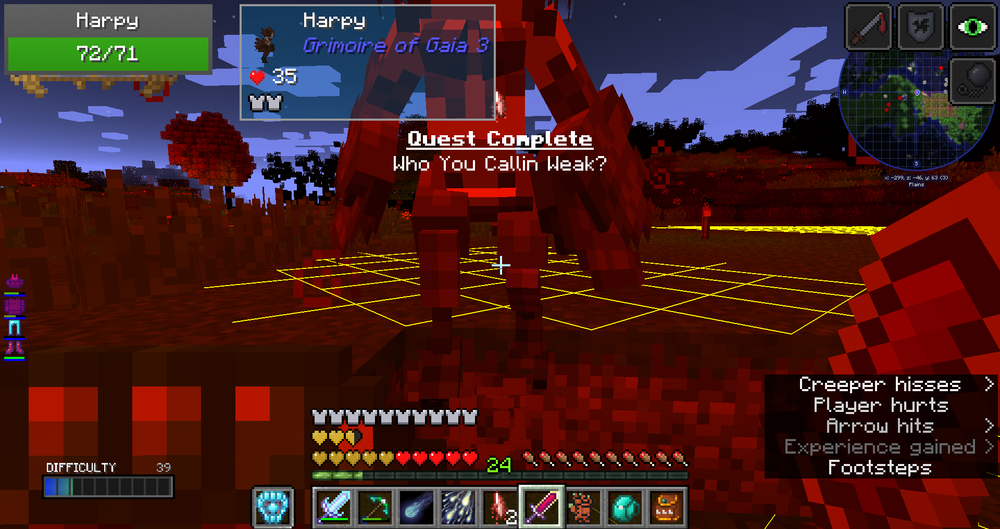
But for that, I need a huge amount of life points, which means I have to setup an automation of it. To do this, I need to obtain a magma cream, and the best way (not involving the nether) is to get a pulverizer. Dipping my toes in Thermal, I quickly realize I’ll need power, so I have to look at making thermopiles.
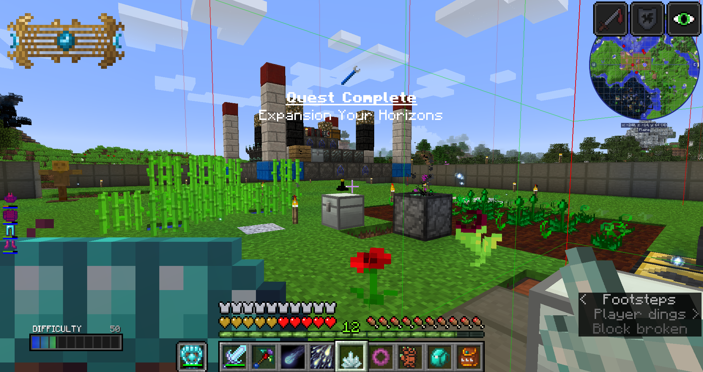
First Blood
Thinking the quests unlocked after would be related, I decide it’s time to battle against the first titan, the water titan! It takes me quite a while to realize it’s immune to most harm, but after some pondering, I brought a lava bucket and that did the trick. One down! The power quest tab is a bit disappointing since it doesn’t involve the simple means, oh well, time to ignore it and work on immersive engineering…
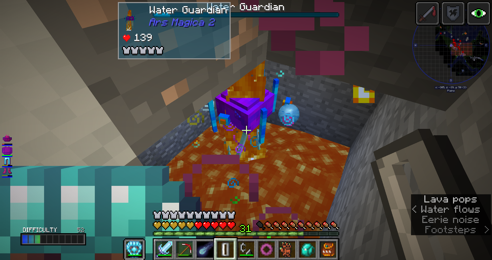
I take the opportunity to make myself a decent revolver, a side option when my star shower can’t work. No more avoiding this time, if I want to be efficient, I have to make a metal press for wires and get power… But first, I install a drawer system with a controller - next level storage here we go! Having a much cleaner sorted system, I realize I had 3 blaze powders to easily get a magma cream, and the best part is that they can be duplicated through crafts with gold - even giving me access to real blaze rods all without going to the nether!
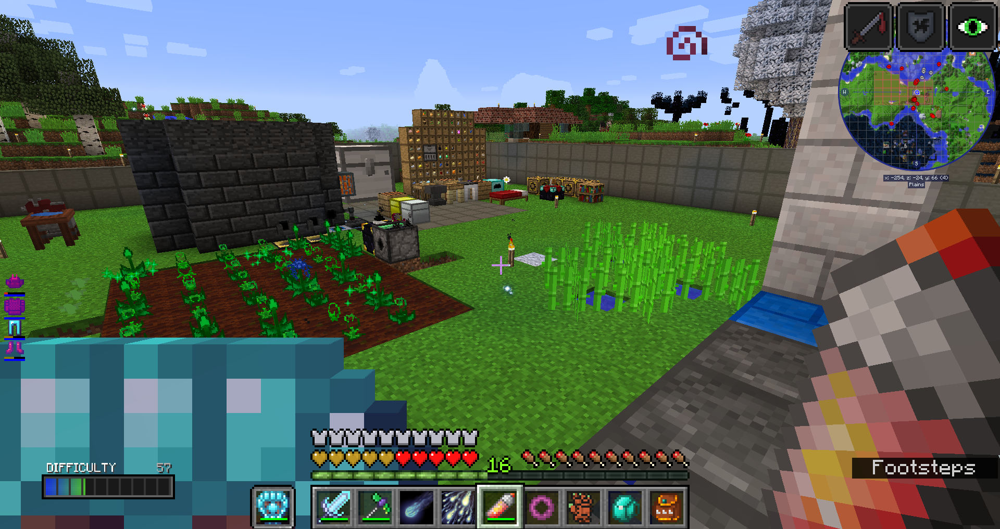
I can now finish the blood magic quest and get a powered spawner as reward, that’s going to be huge for automated blood and loot. I still need a good power source, and lack materials, so I decide to get more chests from the dungeon and somehow while going there an elite mob drops a draconic core. When I come back to the base, I see this can be crafted into a generator for cheap, hahahahaha!
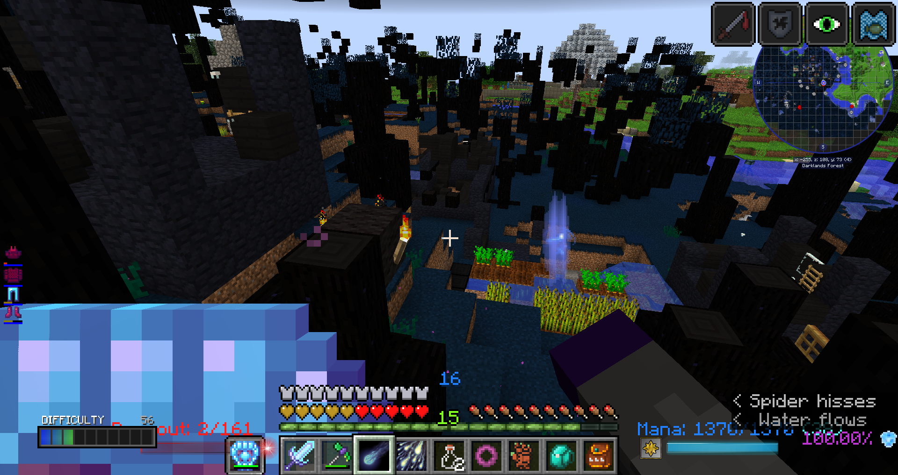
Since I have all the components, I start installing the spawner blood farm under the original one, encased in reinforced stone and with a fan to push them on the glass spikes. It works pretty well, so I just need to upgrade the altar with more runes so that it can fill the master orb for the ritual. Meanwhile, I get sidetracked by various bits of progression and end up with an ender IO alloy smelter, always handy.
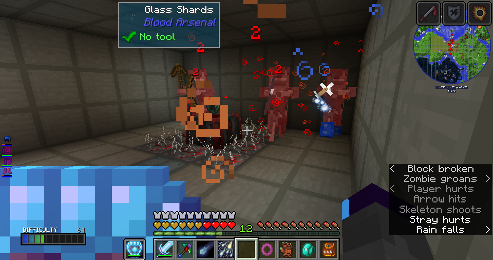
Drawing Out from Space
It doesn’t take long to finish upgrading the runes, and now my LP are increasing effortlessly, I decide it’s time for a break from building and go clear out entirely a dungeon! The amount of loot is quite astronomical and I obtain many useful items, including most of the important mystical seeds.
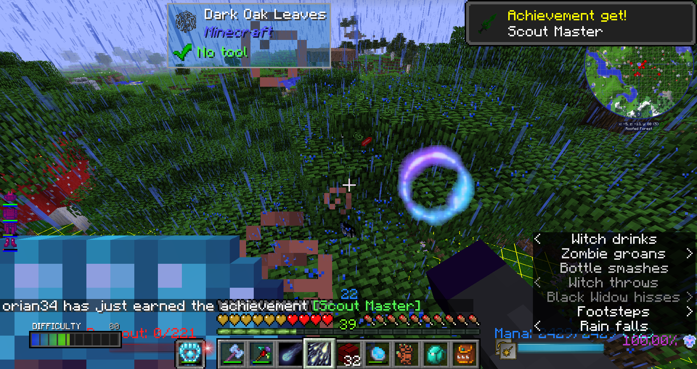
With some effort, everything is sorted and my giant drawer wall is big enough to handle all the item types, no more bottlenecks, it’s time for the meteor! It is a huge success, and I get so much essence from one meteor, I pretty much got infinite amount of high tier. While waiting for LP to refill, I improve my farm setup with 4 harvesters and make the infusion crystal even though I would barely need it now…
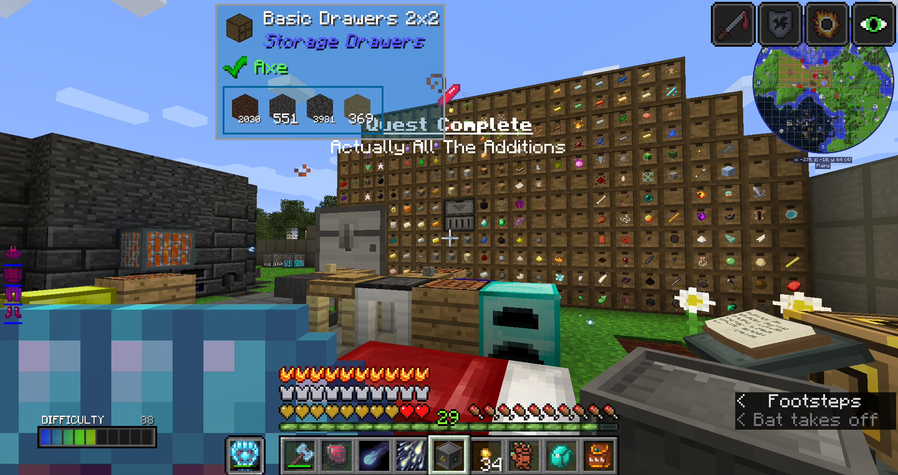
I have all I need to make most of the important resource seeds, truly a new era was ushered! I decide to spend my 2 onyx for my pickaxe head and fully upgrade her with useful modifiers and parts, using blood iron for the handle so it mends infinitely. I progress more in the quests and that makes the first tab completed, blood magic mastered! I can do a huge array of things now that most resources have been unrestrained, so I should focus on having power sources.
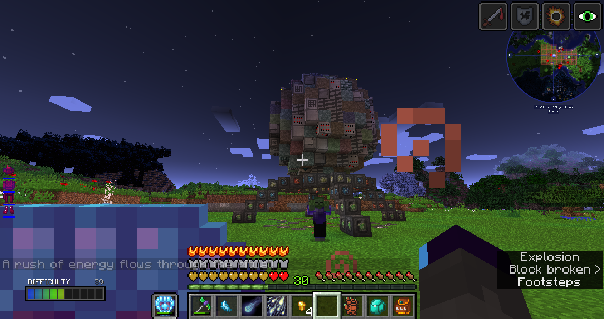
I said that, but I still had a handful more seeds to grow, and I wanted to have some sort of flight, so I do some grid power progression for the squid ring. Things have been going smooth so far, it’s worth unlocking the daily packages so that I can have access to all the trades and see a bit what I need to produce. I utilize my first trade to get a thorns XX shield, honestly quite disappointed with all the other options…
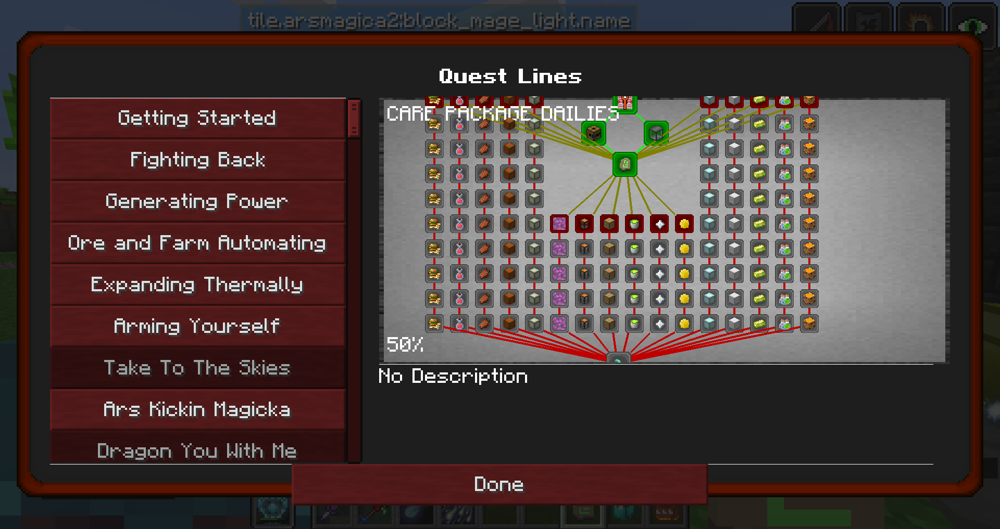
High Power Tensions
I do a pseudo refined storage with ender IO, getting the sweet taste of centralized crafting - I really want to have a functional refined storage soon, but I need to stabilize my power production first. I make thermopiles, but wow how terribly disappointing, they don’t work.
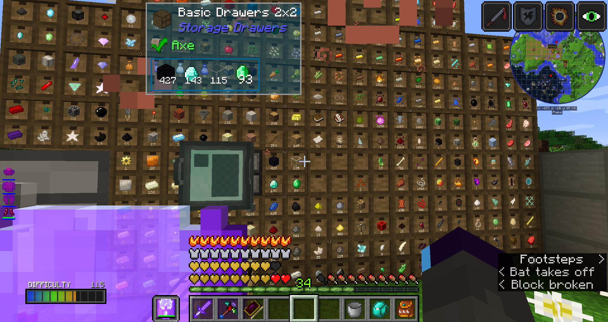
It’s finally time to enter the Nether, I can’t keep postponing it. And I’m very glad I only went there now, because the mobs are just as obnoxious as ever and they’re constantly assaulting me. Thankfully my pseudo-flight and gear help a ton, and I can wring out most of the important resources from the dimension. I tried pumping lava, but the pump needs power… which is my fuel source for the dynamo - guess I’ll do a closed circuit first then it can fuel the rest.
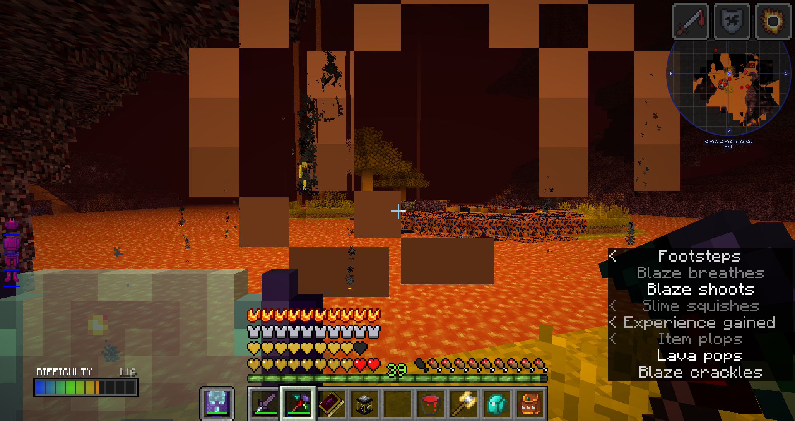
On the side, I try to understand better how to make spells, but it’s all quite confusing and obtuse, still managing to make a mediocre projectile that can stand-in for Starshower underground. Powering the pump, it doesn’t seem to want to send any lava, I give up after a while and try the thermopiles again, and miracle they finally decide to work! Seems like I forgot that the energy cell had the bottom face set to output by default… Blutonium is incredibly effective, and 3 piles are already giving out several Krf/t - time to make a few more and have the supreme storage powered.
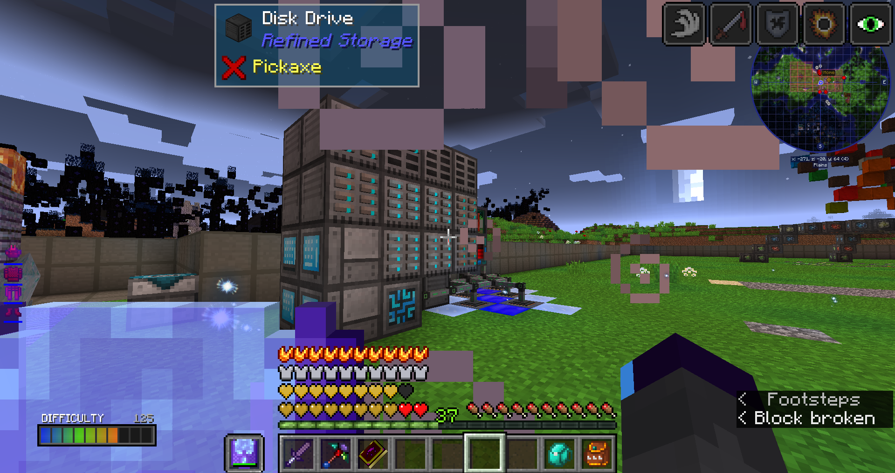
The great drawer migration concluded, and I realize I’m going to start lacking mass amounts of key materials, so before setting up heavy autocrafting, I have to make max stat seeds for manifold yield. The efficiency being so high, I’ll be able to get rid of my giant field, and hopefully reduce lag potential.
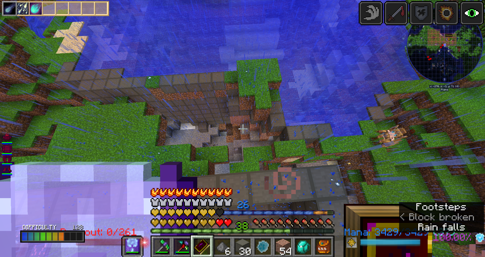
A Stick in the Wheels
After a pause, I figured out I could upgrade my gear with levels… Guess I suddenly gained a huge power up, along with ars armor imbuing. During the long process of getting max stat seeds, I start producing enough for some daily packages, and I notice I can “cheese” my way through the infinity ingot recipe with cheaper ways skipping singularities.
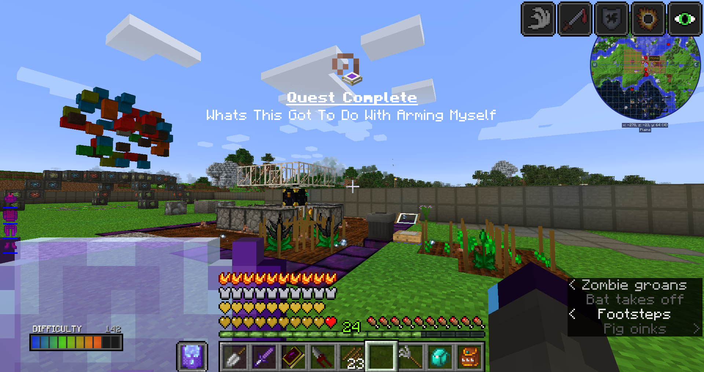
The liquid packages seem like a pain, so my goal will be to get the creative tank at earliest and completely skip those packages. First, I need to get the diamond seeds to make the crystal matrix ingots very easily, then the endgame crafts won’t seem that far away. The supplies already come in decently fast, and I use those uncommon runes to get IC2 end game crafters along with strong solar panels.
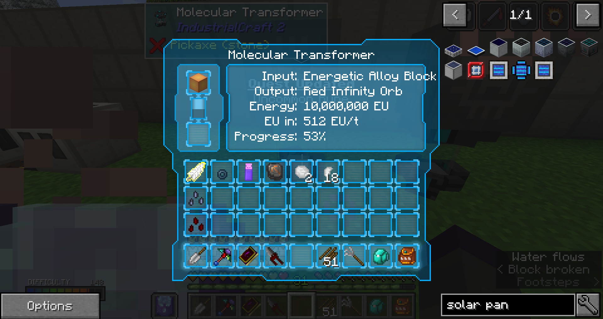
This way I can have it slowly produce more of the endgame package resources, at the same time I had to progress in thermal and basic IC2 machines to have easy access to components. Most of my time is taken by upgrading the important seeds, but on the way I make the extreme crafting table, biggest step reached - I’ll soon be able to get neutronium generated!
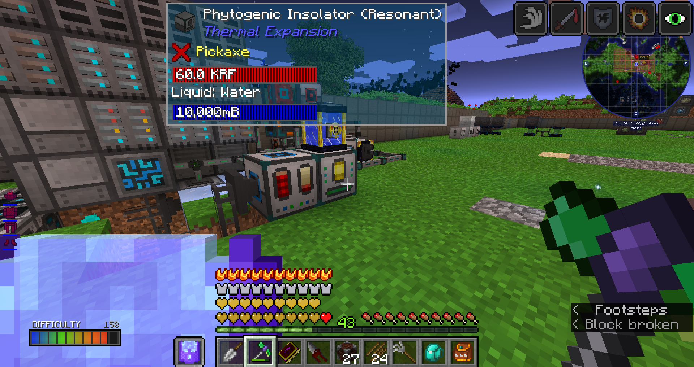
To do that, I’ll require nether stars, which means a trip to the nether for the wither skeleton seeds. After that, things develop more, I install a phytogenic lane for fruit trees and my first star is generated! During an expedition to find cherries, I ended up getting a builder’s wand from a dungeon and… oh no, this is a broken item - it can create blocks as long as I have 2! This is going to help a lot, especially for infinity ingots and the rarer resources, although it won’t be that useful for the package metals - I need too many to be worth the manual effort when the seeds are already running.
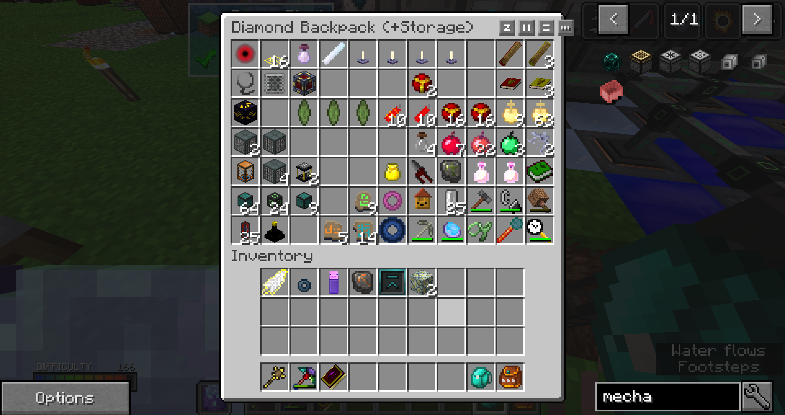
Ripping Through Reality
Honestly, it’s a bit of a relief, because it will shorten the grind and make the experience less unpleasant - the modpack is interesting, but also has issues and lacks polish, understandably. My policy while playing modpacks is that I won’t use cheats (unless it’s required to fix a quest or similar), and beyond that, any method provided by the pack is fair game.
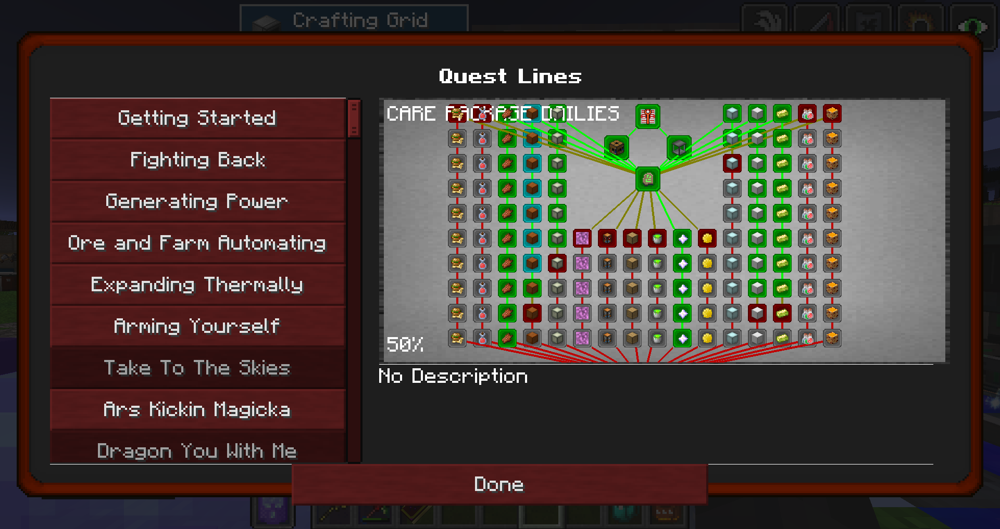
For now, it’s mostly useful to cut down time on making the stars and mob loot, while all the seeds are active and I look into other package types. I need to find a jungle for a specific fruit tree so most of my time is spent roaming around, not having access to biome detectors.
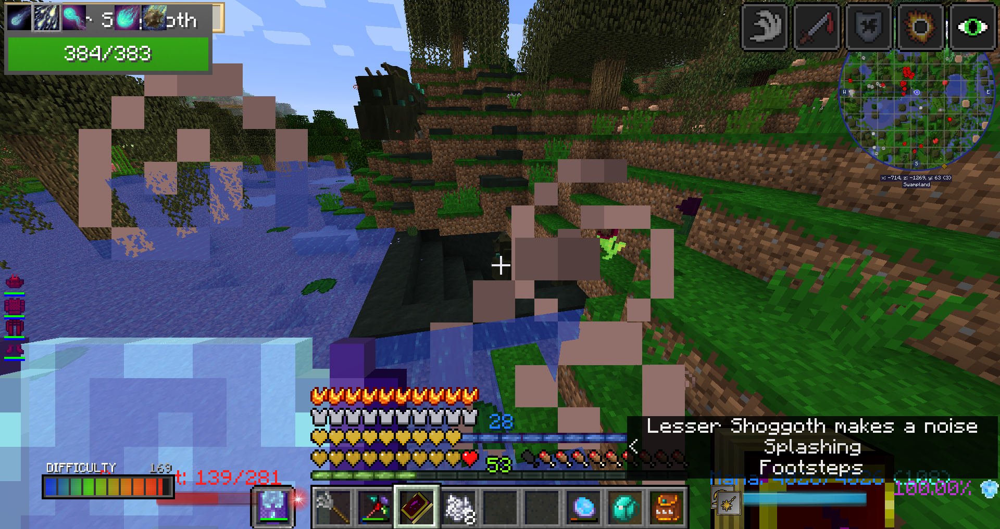
I decide to progress the early quests more and fight off the earth titan. Then I got enough neutronium to duplicate itself and made all the infinity gear pieces thanks to the easy recipes! I pretty much “beat” the pack, and I barely fought the first 2 titans huh…
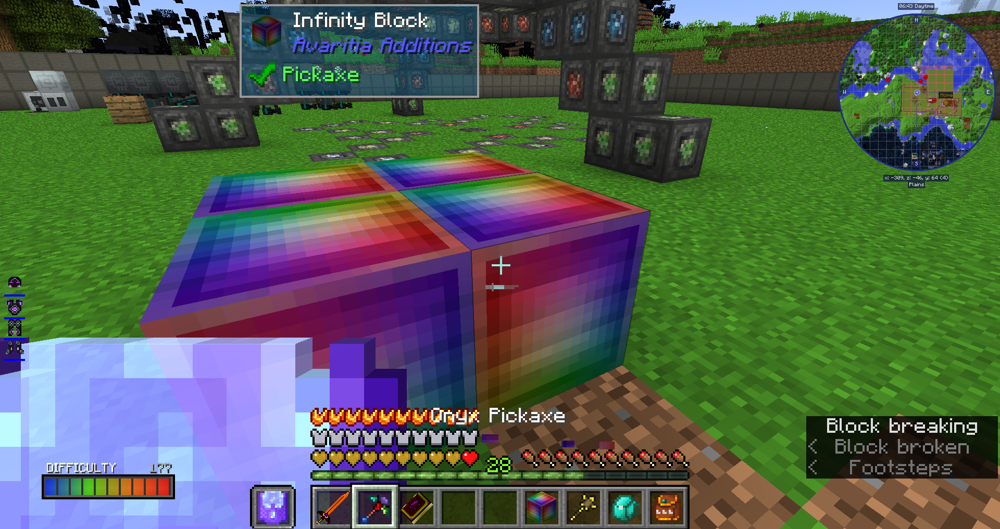
I still have quests to clear out though, so onwards to the beneath! Little did I know, it would be the end of the run for me, as the sword of the cosmos irremediably corrupted the world after being swarmed by mobs during the mining session. In a way, this is a relief, the remaining grind wouldn’t have been very fun and I was getting fed up with the mob aggression…
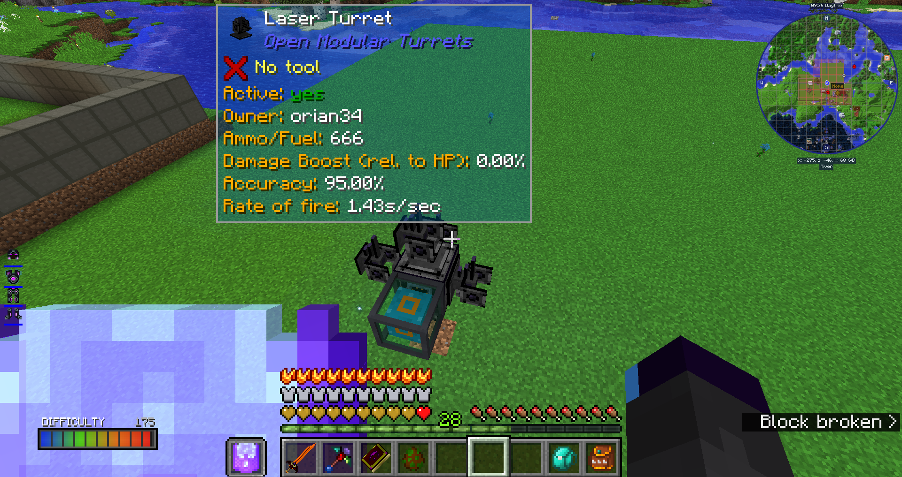
Conclusion
Well then, guess that’s it. To be honest, this pack was strange - the relentless aggression felt too much at the start, then barely mattered later on (while being very obnoxious for exploration).
I liked the ideas and narrative thread it had, and the endgame trades were a much more interesting reason to grind unlike the ad nauseam singularities in most packs. The issue was that they were poorly balanced and only a few trades were worth the effort.
It didn’t help that there were many issues and unpolished bits, so I would advise against trying the modpack, but I read about a newer version that could be more up to the task. It was a try that birthed a better version I’m eager to try one day!
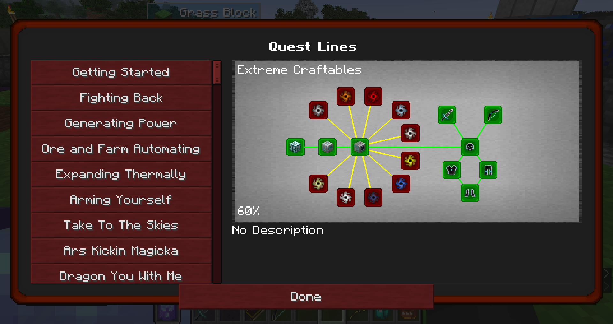